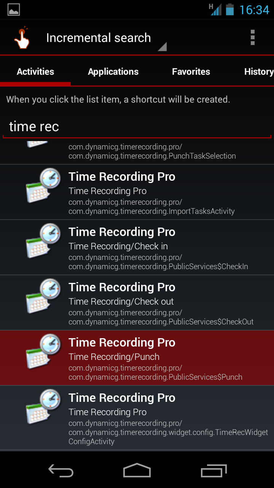

Time Recording
How to create a "Punch" shortcut icon
• Install this app:
QuickShortcutMaker
• Open that app and select the "Punch" activity from "Time Recording" (see picture)
• Create the shortcut
